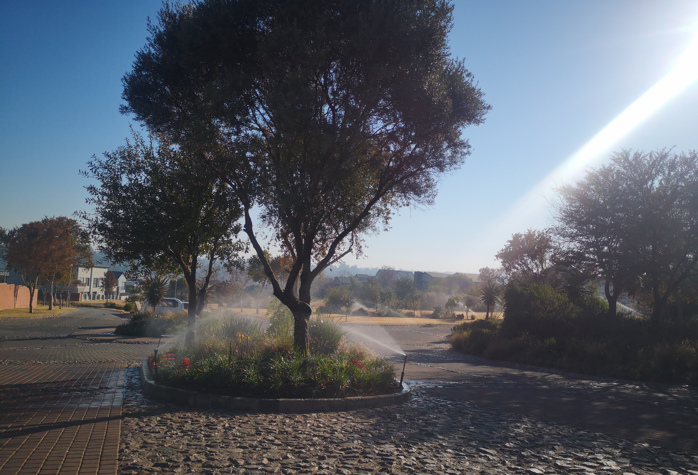

Irrigation Systems
Smart controllers, efficient drip lines, and discreet pop-ups that keep landscaping immaculate.
Pretoria • Centurion • Midstream • Gauteng
Fast emergency response for non-invasive leak detection and drain jetting across Pretoria, Centurion and Midstream. Professional irrigation and backup water systems also available.
Service coverage: leak detection, drain unblocking, irrigation systems, and backup water systems.
Upfront call-out fee applies to emergency services. Irrigation and backup systems are quoted before work begins.

Not sure if you're in range? WhatsApp your suburb and property type.
Over a decade of practical field work supporting homeowners, estates, and property managers across Gauteng.
Proven delivery across installations, fault-finding, and long-term maintenance.
Specialist acoustic tools, CCTV inspection cameras, and high-pressure jetting rigs.
Rapid dispatch for urgent leaks, blocked drains, and supply disruptions.
Homes, estates, schools and commercial properties.
Balanced pressure, leak-free plumbing, clear drains, and reliable backup storage tailored to your property.
Smart controllers, efficient drip lines, and discreet pop-ups that keep landscaping immaculate.
Non-invasive acoustic and thermal scans that find hidden leaks before they cause damage.
Jetting and CCTV inspection to clear and document problem drains without tearing up paving.
Discreet tanks, pumps, filtration, and rainwater harvesting engineered for constant supply.
Transparent steps from enquiry to preventative maintenance, keeping trustees and homeowners updated throughout.
We gather site details, pressure data, and constraints to prep the team before arrival.
Technicians inspect valves, lines, and plant layout, logging everything for accurate quoting.
We share a written scope with options for urgent fixes, upgrades, and sustainability gains.
Work is completed neatly with before/after photos, commissioning notes, and maintenance tips.
We blend engineering with horticulture expertise to keep every high-value property resilient.
Across irrigation, plumbing, and storage we only work on water systems, ensuring deep expertise.
We spec smart controllers, pressure sensors, and rainwater reuse to reduce consumption.
Teams arrive uniformed, vetted, and ready to work within HOA, security, and quiet-hour rules.
Flexible scheduling for urgent callouts and planned maintenance windows.
We hand over digital reports with maintenance schedules for trustees and property managers.
Systems are built to expand into boreholes, solar pumping, and additional zones later.
We keep clients informed before, during, and after every project.
“Our Sandhurst estate now uses 30% less water thanks to their soil sensors and schedule tuning.”
Nomsa K. · Sandton“They found a buried leak between villas without digging up paving. Reports made the insurance claim painless.”
Michael & Asha · Waterkloof“Backup tanks were disguised behind screening and supply now rides through every outage.”
Estate FM Team · MidstreamJohannesburg North, Sandton, Midrand, Waterfall, Centurion, Pretoria East, and golf estate developments across Gauteng. We work neatly around landscaping, pets, and tight access.
Share a few details and our coordinators will call to confirm the best time. Prefer WhatsApp or Teams? Let us know in the message field.